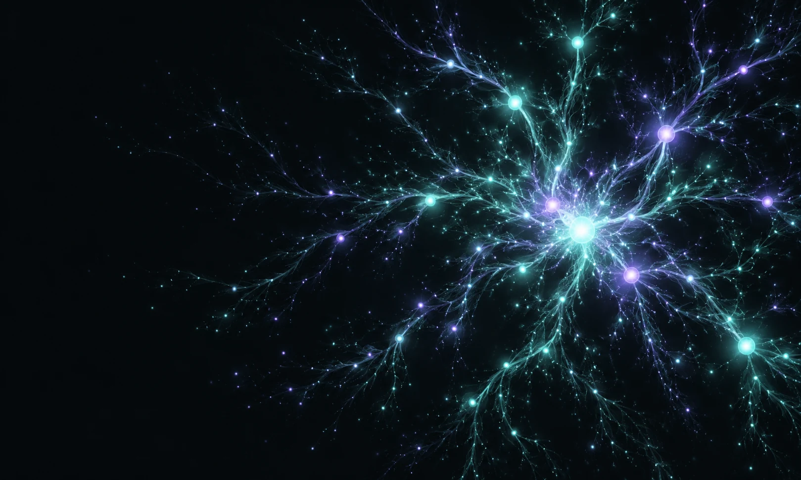

MSc, Biochemistry
Central University of Kerala
Neuroimmunology / Software
Researcher. Builder. Always curious.
I study how inflammation shapes the ageing brain, and build practical software for discovery, everyday work and play.
PhD researcher Trinity College Dublin

An abstract view of connected ideas
Inflammation. Ageing. Recovery.
My research explores systemic inflammation, vulnerability to delirium in ageing, and the dynamics of recovery.
I study how TNF-α-driven inflammation relates to these processes, and how IL-17A may modulate recovery. This work connects neuroimmunology with behaviour and brain network function.
Research focus in the 2026 TCD programmePublished online · 14 July 2026
Tools for the lab, experiments in game design, and small solutions to everyday problems. Take a look around.
Loading selected projects…
Loading selected project screens…
I’m a neuroimmunology researcher at Trinity College Dublin, with earlier research experience at the National Centre for Biological Sciences in Bengaluru.
I joined Hiyaa Ghosh’s group at NCBS as a Junior Research Fellow in 2021, studying microglial responses to injury. Alongside research, I build the tools I want to use—from image alignment and lab planning to game editors and quiz nights.
Central University of Kerala
Hindi Mahavidyalaya
Experience across experiments, analysis and software.
Mouse handling · stereotaxic surgery · microdissection · behavioural assays · colony work
Flow cytometry · immunofluorescence · confocal microscopy · cell culture · Cre-loxP lineage tracing
qPCR · PCR · RNA and protein extraction · Western blotting · primer design
Python · R · ImageJ/Fiji · Imaris · FlowJo · Leica LAS X · GraphPad Prism · AnyMaze
04 / Start a conversation
Research, software, or an idea worth exploring—get in touch.